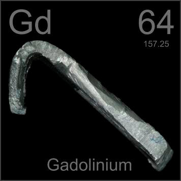

HOME
PREVIOUS
NEXT

Gadolinium
Atomic Weight: 157.25
Density: 7.901 g/cm3
Melting Point: 1313 °C
Boiling Point: 3250 °C
Gadolinium compounds (not metal like this) are injected into patients receiving MRI scans to improve contrast. Several isotopes are also mixed with uranium fuel in nuclear reactors to absorb neutrons.